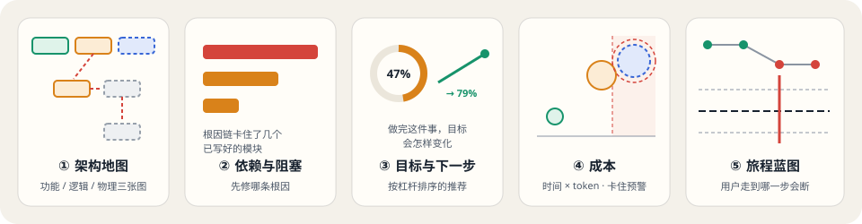
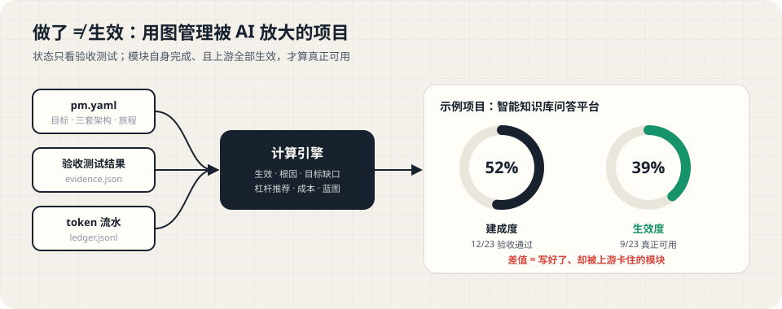
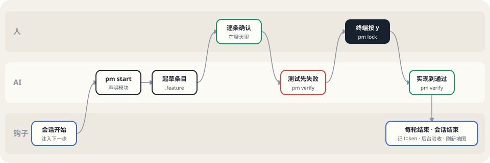

ai-pm · Documentation
用图管理
被 AI 放大的项目
架构图代替任务列表，验收测试代替"做没做"，从目标倒推下一步。这里是全部设计与实现文档的入口。

01
做了 ≠ 生效
三个输入经过计算引擎，得到建成度与生效度。两者之差，就是写好了却被上游卡住的部分，传统看板看不见它。

02
文档
每份文档都有文字版（MD）和图形版（HTML），点击卡片打开图形版。
方法论
概念设计
四种状态、五个视图、7 项设计决策：粒度、看成果不看成本、三套架构、跨视图传播、验收测试分工、成本、旅程蓝图。
concept.html · concept.md 产品产品形态与愿景
嵌在开发流程里的 Skill；本地优先、云端可选；多项目总览与"今天最值得做的三件事"。
product-vision.html · .md P0 完成pm.yaml 与计算引擎
格式与 8 类校验；生效、根因、目标缺口、杠杆推荐、成本、蓝图推导；示例项目的真实计算结果。
p0-engine.html · .md P1 完成项目地图页面
一条命令生成单文件、离线、可交互的五视图页面；内嵌真实生成的示例。
p1-dashboard.html · .md P2 完成Claude Code 插件
Skill + 三个钩子：开工前锁定验收条目、记录 token、会话结束后台验收；终端确认与本机信任。
p2-skill.html · .md 示例示例项目地图
智能知识库问答平台：23 个节点、3 个目标，五个视图都可以直接操作。
demo-dashboard.html
03
一次会话里，谁做什么
你只在两处出手：在聊天里确认验收条目、在终端里按 y 锁定。其余由 AI 和钩子完成。

04
三步开始
1添加插件市场
claude plugin marketplace add MiniBotFactory/ai-projects-management2安装插件
claude plugin install ai-pm@ai-pm-local3在项目里新开会话
帮我初始化项目地图05
路线
P0
计算引擎
已完成
P1
项目地图页面
已完成
P2
Claude Code 插件
已完成
P3
常驻面板
计划中
P4
云端与多项目
计划中